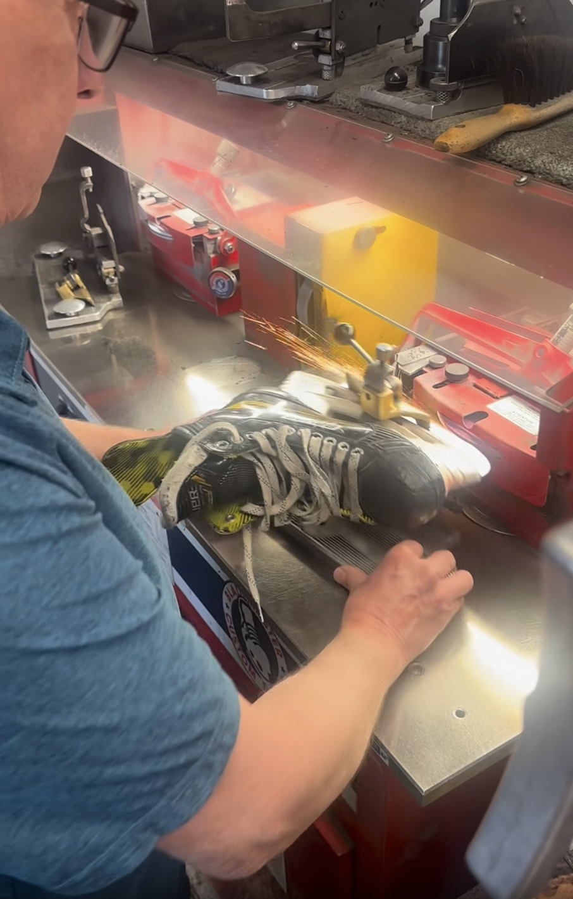

Our Services
At Top Shelf Hockey, we take pride in providing expert service for players of all levels. Whether you’re sharpening your skates for game day, re-taping your stick, or needing a custom equipment fitting, we’ve got you covered.
- Walk-in Skate Sharpening & Profiling
- Stick Cutting & Tape Jobs
- Gear Fitting
- Equipment Repair
- Skate Sizing and Baking
Visit us in-store or call ahead to schedule your service appointment. We’re here to help you perform your best.